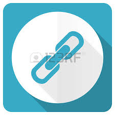

Toggle dropdown menu
Measurement Widget
Share Widget
Measurement Widget
Share Widget
Share this map

Share current map extent
Map Link
Embed Map
Size (width/height):
100% x 640px
100% x 480px
100% x 320px
800px x 600px
640px x 480px
480px x 320px